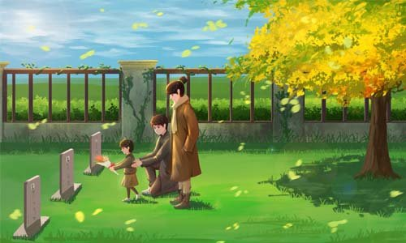

The Qingming or Ching Ming festival, also known as Tomb-Sweeping Day in English is a traditional Chinese festival observed by the Han Chinese of Mainland China, Taiwan, Hong Kong, Macau, Malaysia, Singapore, Indonesia, Thailand and by the Chitty of Malaysia and Singapore. 
It falls on the first day of the fifth solar term of the traditional Chinese lunisolar calendar. This makes it the 15th day after the Spring Equinox, either 4, 5 or 6 April in a given year.
During Qingming, Chinese families visit the tombs of their ancestors to clean the gravesites, pray to their ancestors, and make ritual offerings.Offerings would typically include traditional food dishes and the burning of joss sticks and joss paper. The holiday recognizes the traditional reverence of one's ancestors in Chinese culture.
The Qingming Festival has been observed by the Chinese for over 2500 years. It became a public holiday in mainland China in 2008. In Taiwan, the public holiday was in the past observed on 5 April to honor the death of Chiang Kai-shek on that day in 1975, but with Chiang's popularity waning, this convention is not being observed.
Food
In mainland China, the holiday is associated with the consumption of qingtuan, green dumplings made of glutinous rice and Chinese mugwort or barley grass. A similar confection called caozaiguo or shuchuguo, made with Jersey cudweed, is consumed in Taiwan.
Activity
The most visible Qingming Festival activity revolves around tomb sweeping, the ritual cleaning of gravesites to honor a family's ancestors. People care for their relatives in the afterlife by visiting at the cemetery, refreshing their tombstones and making offerings of food, incense and joss paper.
the Most Important Custom of Qingming Festival. People commemorate and show respect to their ancestors by visiting their graves, offering food, tea or wine, burning incense, burning or offering joss paper representing money.
Process
- Sweep the tombs
- Remove weeds
- Add fresh soil to the graves
Not only is it a day for commemorating the dead, is it also a time for people to enjoy themselves. During March, everything in nature takes on a new look, as trees turn green, flowers blossom, and the sun shines brightly. It is a fine time to go out and to appreciate the beautiful scenes of nature. This custom can be traced back to the Tang Dynasty (618 - 907) and followed by each dynasty later till today. So visitors can be seen everywhere during the month of the festival.
Also is when a year pure brightness, raining rain, little melancholy, and writes a bring tears. Relatives and friends in heaven, how's everything with you?
Tomb-sweeping day,poplar and willows,missing someone,smile to tomorrow.
The ancients have already know the tomb-sweeping day is a good season,is a martyrs for an outing outing family drinking party day.
All in all, the Qingming Festival is an occasion of unique characteristics, integrating sorrowful tears to the dead with the continuous laughter from the spring outing.